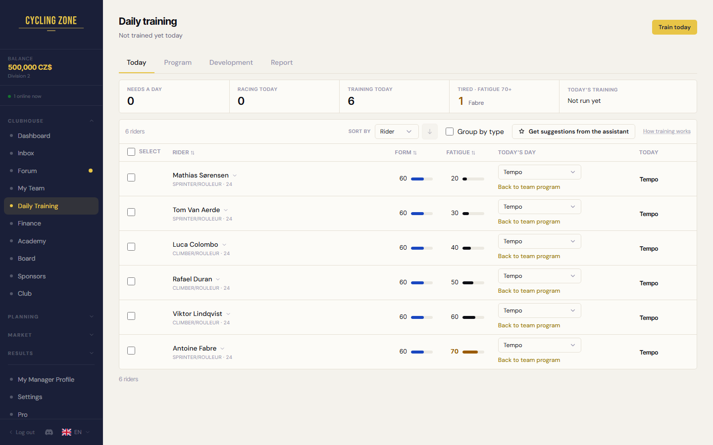
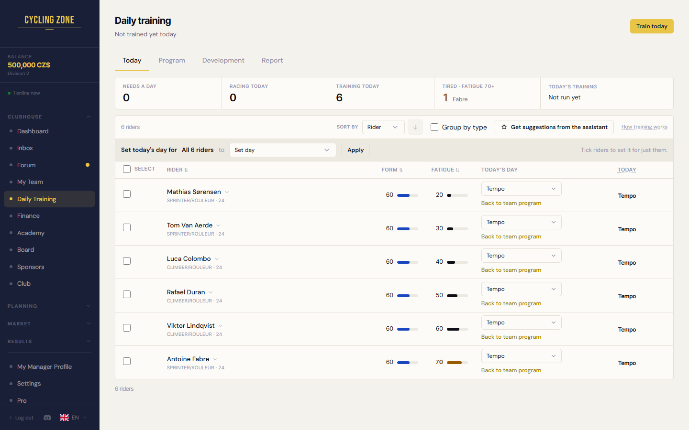
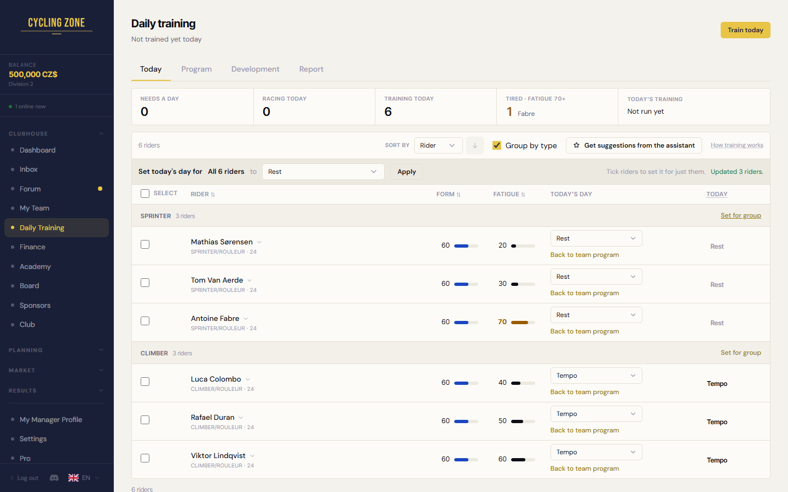
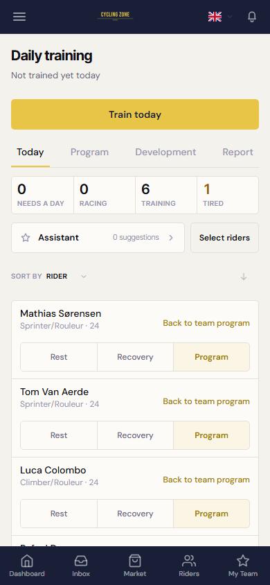

Foer flag off, desktop 1440, e2e-data (siden uaendret)

Efter flag on, desktop 1440, samme data

Group by type flag on: "Set for group" paa hver gruppe

Mobil 390 flag on, uroert

1 Linjen "Set today's day for ... to ... Apply" er altid synlig. Intet markeret = "All 6 riders" (alle i visningen/filtret), ellers "N selected". Samme bulk-sti som foer (POST /api/training/bulk), ingen ny backend-logik. "Clear" vises ved markering.
2 Med "Group by type" staar "Set for group" paa hver gruppe-overskrift; den bruger sessionen fra linjens vaelger.
3 Today-overskriften har en kort forklaring (hover). Today / R1-R5-kolonnen er IKKE fjernet.
Flaget training_bulk_day staar paa off: ingen spiller ser noget foer ejeren flytter det. Program-fanens noter bliver almindelig graa tekst med flaget.
Ikke vist: en dag med flere loebsdage (R1-R5) findes ikke paa Today-fanen i dag: kolonnen er altid een ("Today") indtil API'et leverer et loebsdags-antal.